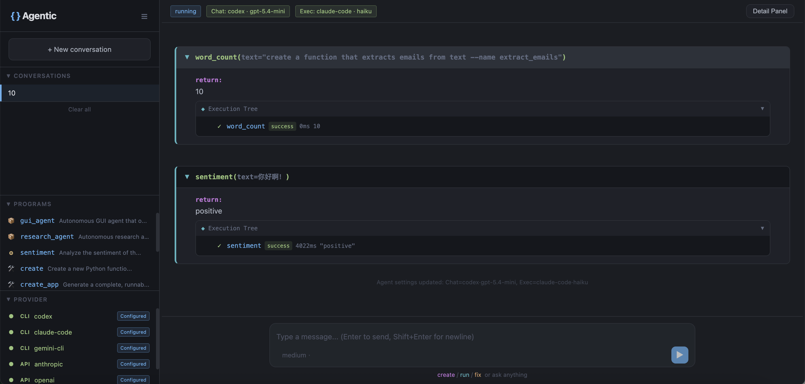
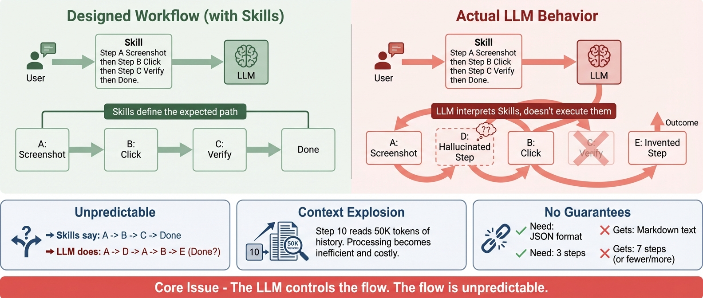

开源 Agent Harness 框架。支持任意 LLM 和平台。Agentic Programming 范式。


快速上手 · 文档入口 · API 参考 · 设计哲学 · English
基于 Agentic Programming 范式。 当前的 LLM agent 框架让 LLM 控制一切——做什么、何时做、怎么做。结果？不可预测的执行、上下文爆炸、没有输出保证。OpenProgram 反转这一切：Python 控制流程，LLM 只在被要求时推理。 详见设计哲学。

快速开始#
前置条件#
OpenProgram 需要至少一个 LLM 提供方。设置以下任意一个：
| 提供方 | 设置 |
|---|---|
| Claude Code CLI | npm i -g @anthropic-ai/claude-code && claude login |
| Codex CLI | npm i -g @openai/codex && codex auth |
| Gemini CLI | npm i -g @google/gemini-cli |
| Anthropic API | export ANTHROPIC_API_KEY=... |
| OpenAI API | export OPENAI_API_KEY=... |
| Gemini API | export GOOGLE_API_KEY=... |
然后选择你的使用方式：
方式 A: Python — 编写 agentic 代码#
安装包后直接编码：
一键安装 host（网页 UI + 终端 UI + 浏览器/渠道）：
# macOS / Linux：
curl -fsSL https://raw.githubusercontent.com/Fzkuji/OpenProgram/main/scripts/install.sh | bash
# Windows（PowerShell）：
iwr -useb https://raw.githubusercontent.com/Fzkuji/OpenProgram/main/scripts/install.ps1 | iex
更多选项（参数、无人值守 / AI agent 安装、从 checkout 安装）见 install.md。
harness 作为 OpenProgram 程序 装进 openprogram/functions/agentics/<Harness>/
并自动注册。通用做法（你自己写的也一样）是克隆进那个目录再跑它的安装脚本；
纯 Python 的 Research / Wiki 另有一行快捷命令：
openprogram programs install research # 或 wiki（GUI agent 见其 README，需跑自带安装脚本）
from openprogram import agentic_function
from openprogram.providers.registry import create_runtime
runtime = create_runtime()
@agentic_function
def login_flow(username, password):
"""完成登录流程。"""
observe(task="find login form") # Python 决定做什么
click(element="login button") # Python 决定顺序
return verify(expected="dashboard") # Python 决定何时停止
方式 B: Skills — 让你的 LLM agent 使用#
按"方式 A"装好 OpenProgram 后，注册 skills：
openprogram install-skills # 自动检测 Claude Code / Gemini CLI
或手动：
git clone https://github.com/Fzkuji/OpenProgram.git
cp -r OpenProgram/skills/* ~/.claude/skills/ # Claude Code
cp -r OpenProgram/skills/* ~/.gemini/skills/ # Gemini CLI
然后与 agent 对话："创建一个从文本中提取邮箱地址的函数"
Agent 会识别 skill，调用 openprogram create，生成的函数会处理后续所有操作。
使用 openprogram providers 验证你的配置。
每个 provider 支持多账号（每个账号是一个命名 profile）：用 openprogram providers use <provider> [profile] 选择某个 provider 当前跑哪个账号，并在 CLI、Web（设置 → Providers）、TUI（/login <provider>）任一端用同一套面板管理（列出 / 添加 / 激活 / 改名 / 删除）。给一个账号添加多个 API key 即可自动轮询 —— 某个 key 被限流会自动冷却并切到下一个。详见 docs/features.md。
自定义 provider：内置列表之外的 OpenAI 兼容端点，可在设置页点 添加自定义 Provider 加进来 —— 只需填 名称 和 Base URL（id 由名称自动生成）。模型既可从该 provider 的 /models 端点直接浏览勾选，也可按 id 手动添加；多个 API key 与内置 provider 用同一套凭据池统一管理、自动轮询。
方式 C: Web UI#
基于浏览器的界面，可实时运行函数、管理对话、查看执行树。安装器（方式 A）已经构建好网页 UI，直接启动：
openprogram web
访问 http://localhost:18100。Next.js 前端运行在 18100，FastAPI 后端默认运行在 18109。支持明暗主题（Settings → General）。
支持的项目#
OpenProgram 自带三个 agent 应用,位于 openprogram/functions/agentics/——每个都是基于 @agentic_function 范式构建的完整 agent:
| 项目 | 功能 |
|---|---|
| GUI Agent Harness | 自主 GUI agent——通过视觉操控桌面应用(及 OSWorld 虚拟机):observe → plan → act → verify。Python 控制循环,LLM 仅在被要求时推理。 |
| Research Agent Harness | 自主研究 agent——文献调研 → idea → 实验 → 论文写作 → 跨模型审稿。从选题到投稿全流程。 |
| Wiki Agent Harness | 自主 wiki 构建——把笔记、文档、对话整理成结构化的、兼容 Obsidian 的知识库,带 [[wikilinks]]。 |
为什么选择 Agentic Programming?#

| 原则 | 方式 |
|---|---|
| 确定性流程 | Python 控制 if/else/for/while。执行路径是保证的，不是建议的。 |
| 最少 LLM 调用 | 只在需要推理时调用 LLM。2 次调用，不是 10 次。 |
| 指令写在代码里 | 每次调用的 prompt 写在函数体的 runtime.exec(content=...) 里，不散落在单独的 prompt 文件中。 |
| 自我演化 | 函数由 agent 直接编写、修复、改进——遵循 agentic-programming skill。 |
当前框架的问题

当前的 LLM agent 框架将 LLM 置于中央调度器的位置。这带来了三个根本问题：
- 不可预测的执行 — LLM 可能跳过、重复或自行发明步骤，无视预设的工作流
- 上下文爆炸 — 每次工具调用往返都会累积历史记录
- 没有输出保证 — LLM 是在"理解"指令，而非"执行"指令
核心问题：LLM 控制了流程，但没有任何东西能强制执行它。 Skills、prompts 和系统消息只是建议，不是保证。
| Tool-Calling / MCP | Agentic Programming | |
|---|---|---|
| 谁调度？ | LLM 决定 | Python 决定 |
| 函数包含 | 纯代码 | 代码 + LLM 推理 |
| 上下文 | 扁平的对话 | 结构化的树 |
| Prompt | 隐藏在 agent 配置中 | Docstring = prompt |
| 自我改进 | 未内置 | create → fix → 演化 |
MCP 是传输层。Agentic Programming 是执行模型。两者正交。
核心特性#
自动上下文#
每个 @agentic_function 调用创建函数节点，每次 runtime.exec() 创建 exec 节点。节点组成树，自动注入到 LLM 调用中：
login_flow ✓ 8.8s
├── observe ✓ 3.1s
│ └── _exec → "found login form at (200, 300)"
├── click ✓ 2.5s
│ └── _exec → "clicked login button"
└── verify ✓ 3.2s
└── _exec → "dashboard confirmed"
当 verify 调用 LLM 时，它自动看到 observe 和 click 的返回结果。不需要手动管理上下文。
Deep Work — 自主质量循环#
对于需要持续努力和高标准的复杂任务，deep_work 会运行一个自主的 计划-执行-评估 循环，直到输出达到指定的质量水平：
from openprogram.functions.agentics.deep_work import deep_work
result = deep_work(
task="写一篇关于 LLM agent 中上下文管理的综述论文。",
level="phd", # high_school → bachelor → master → phd → professor
runtime=runtime,
)
Agent 先确认需求，然后完全自主工作——执行、自我评估、修订，直到通过质量审查。状态持久化到磁盘，中断的工作可以从断点恢复。
函数编写函数#
编写、修复、搭建 @agentic_function 本身也是 agent 的工作——用普通文件编辑工具直接完成，遵循 agentic-programming skill（skills/agentic-programming/SKILL.md）。没有专门的 create() / fix() 框架调用：它们以前也只是包了一次 LLM 调用加一次文件写入,agent 自己就能做。
skill 是完整规范——文件放哪、装饰器元数据、docstring 与 content 的分工、校验清单、冒烟测试。write → run → fail → fix 循环依然意味着程序在使用中自我改进。
API 参考#
核心#
| 导入 | 功能 |
|---|---|
from openprogram import agentic_function |
装饰器。每次调用记录为 session DAG 的一个节点 |
from openprogram.agentic_programming.runtime import Runtime |
LLM 运行时。exec() 调用 LLM，上下文从 DAG 自动算出 |
from openprogram.providers.registry import create_runtime |
创建 Runtime，支持自动检测或指定提供方 |
编写函数#
没有 create() / fix() 这类元函数——编写、修改、校验 @agentic_function 直接用普通文件编辑工具完成，遵循 agentic-programming skill（skills/agentic-programming/SKILL.md）。该 skill 是完整规范:文件布局、装饰器元数据、docstring 与 content 的分工、校验清单。
内置函数#
| 导入 | 功能 |
|---|---|
from openprogram.functions.agentics.deep_work import deep_work |
自主计划-执行-评估循环，支持质量等级 |
from openprogram.functions.agentics.ask_user import ask_user |
向用户提一个澄清问题并阻塞等待答复 |
提供方#
六个内置提供方：Anthropic、OpenAI、Gemini (API)、Claude Code、Codex、Gemini (CLI)。所有 CLI 提供方在调用之间维持会话连续性。详见 Provider 文档。
集成#
| 指南 | 描述 |
|---|---|
| Getting Started | 3 分钟上手及可运行示例 |
| Claude Code | 通过 Claude Code CLI 使用，无需 API key |
| OpenClaw | 作为 OpenClaw skill 使用 |
| API Reference | 完整 API 文档 |
项目结构
openprogram/
├── __init__.py # agentic_function 再导出
├── cli.py # `openprogram` 命令入口
├── agentic_programming/ # 范式引擎
│ ├── function.py # @agentic_function 装饰器
│ ├── runtime.py # Runtime（exec + retry + DAG 上下文）
│ ├── session.py # 会话生命周期
│ └── skills.py # SKILL.md 发现
├── context/ # 扁平 DAG 上下文模型 — nodes / storage / render / render_context
├── providers/ # Anthropic、OpenAI、Gemini、Claude Code、Codex、Gemini CLI
├── functions/
│ ├── _registry.py # tools + agentic functions 的统一注册表
│ ├── tools/ # @function 叶子工具 — bash / read / edit / grep / semble_search / web_search 等
│ └── agentics/ # @agentic_function 模块（每个一个目录，代码写在 __init__.py）
│ ├── ask_user/ # 向用户提澄清问题
│ ├── deep_work/ # 自主计划-执行-评估循环
│ ├── extract_pdf_figures/ # PDF 图表抽取
│ ├── … # 其它 agentic functions …
│ ├── GUI-Agent-Harness/ # 自主 GUI agent（独立仓库，符号链接）
│ ├── Research-Agent-Harness/ # 自主研究 agent（独立仓库，符号链接）
│ └── Wiki-Agent-Harness/ # 自主 wiki 构建 agent（独立仓库，符号链接）
└── webui/ # `openprogram web` 浏览器 UI
skills/ # 用于 agent 集成的 SKILL.md 文件
examples/ # 可运行的示例
tests/ # pytest 测试套件
贡献#
这是一个范式提案，附带参考实现。欢迎讨论、其他语言的替代实现、验证或挑战此方法的用例，以及 bug 报告。
详见 CONTRIBUTING.md。
许可证#
AGPL-3.0 © 2026 Fzkuji。可自由使用、研究、修改、分发——但任何分发或作为联网服务运行的衍生作品也必须以 AGPL 开源,并保留署名。